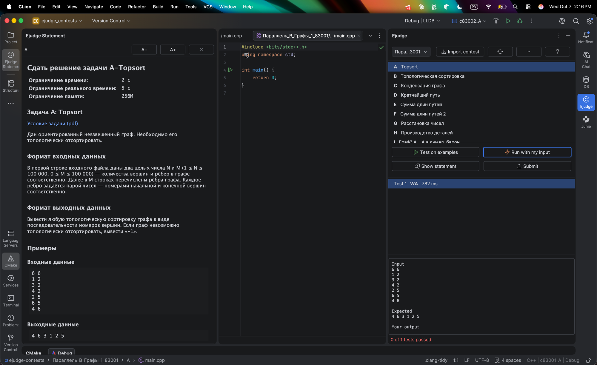

← Вячеслав Майоров
Плагин для CLion
Ejudge прямо в CLion
Решайте контесты Яндекс Кружка, не переключаясь на браузер: условия, тесты и отправка решений рядом с кодом.

Что умеет
📥
Скачивает контесты Выберите параллель — все контесты загрузятся с условиями и примерами.
📖
Условие рядом с кодом Читается слева, шрифт можно менять, панель закрывается.
🧪
Тесты и свой ввод Проверка на примерах с вердиктами OK, WA, RE, TL и запуск на любых данных.
🚀
Отправка решений Одна кнопка — и вердикт сервера приходит уведомлением.
Установка
Скачайте zip и в CLion откройте Settings → Plugins → ⚙ → Install Plugin from Disk… Перезапустите CLion. Дальше она сама подскажет, что нажимать.
Или одной командой — закройте CLion и выберите систему:
macOS Linux Windows
curl -L -o /tmp/ejudge-clion.zip https://github.com/vmaiorov-collab/ejudge-clion/releases/latest/download/ejudge-clion-0.1.0.zip && unzip -o /tmp/ejudge-clion.zip -d "$HOME/Library/Application Support/JetBrains/CLion2026.2/plugins"Копировать
curl -L -o /tmp/ejudge-clion.zip https://github.com/vmaiorov-collab/ejudge-clion/releases/latest/download/ejudge-clion-0.1.0.zip && unzip -o /tmp/ejudge-clion.zip -d "$HOME/.local/share/JetBrains/CLion2026.2/plugins"Копировать
Invoke-WebRequest https://github.com/vmaiorov-collab/ejudge-clion/releases/latest/download/ejudge-clion-0.1.0.zip -OutFile $env:TEMP\ejudge-clion.zip; Expand-Archive -Force $env:TEMP\ejudge-clion.zip "$env:APPDATA\JetBrains\CLion2026.2\plugins"Копировать
Нужен CLion 2026.2 или новее. Если у вас другая версия, замените CLion2026.2 в пути на свою папку. Плагин анонимно считает число пользователей — это отключается в настройках.